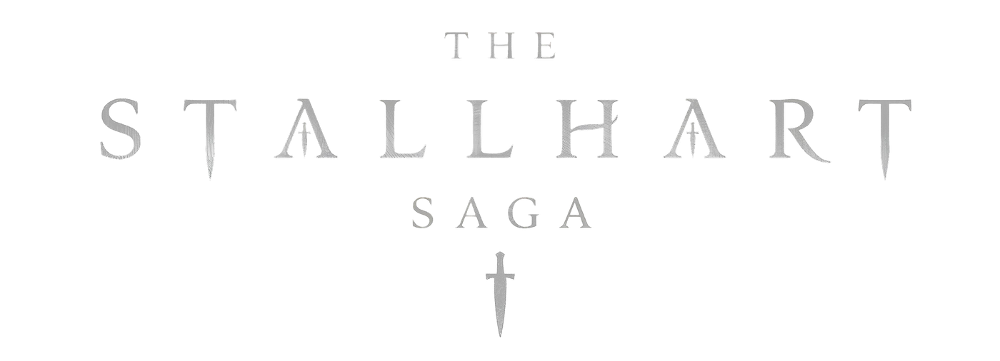

Stallhart Destanı · Cilt I

"İmparatorluklar taştan değil, itaatten inşa edilir.
Ve itaat, her zaman bir günün gelip çatacağını bilir."
Stallhart İmparatorluğu'nun tarihi, coğrafyası, inançları ve yasaları.
Gümüş Yol Boğazı ile ikiye ayrılan kıtanın büyük bölümüne hükmeden Stallhart İmparatorluğu, onlarca eyaleti bünyesinde barındırır. Başkent Başsancak topraklarında yer alır.
Kıtanın en stratejik su yolu. Kuzeyde Garall (Z'ela) ile güneyde Todfa ve Gom Ara arasında uzanan bu boğaz, doğuyla batı arasındaki ticareti ve askerî hareketliliği belirler.
Galetsha ve Memanth, imparatorluğun sert kuzey sınırlarını oluştururlar. Sarp dağlar, ormanlar ve geçit vermez vadilerle dolu bu topraklar askerî stratejinin merkezindedir.
Selya, Khasinya ve Pilkard adaları deniz gücünün temelidir. Selya stratejik konumuyla öne çıkar; bilge Celios Selya'nın yönetiminde yarı özerk bir yapı sürdürür.
İmparatorluğun resmî dini Denge Konseyi öğretisi, Kaos ve Düzen tanrıları arasındaki denge ilkesine dayanır. Kaos tanrıları: Nazeth, Naldor, Garator, Lodvez, Vazmer, Zetus, Hardir. Düzen tanrıları: Gydor, Lidros, Lomera, Veleris, Brikon, Eanhar, Raxes. Tarafsız Galdra tüm inançların üzerindedir.
Yasak İlk Anne inancı yüzyıllar önce yasaklanmıştır. Üç Yapraklı Yonca sembolüyle tanınan bu inanç; madenlerde, ninnilerde ve gizli el yazmalarıyla yaşamaya devam eder.
Kurucu Craes Stallhart, esaretten döndükten sonra Stallhart soyunun ilahi kandan geldiğini ilan etti. Arathen Krallığı bu iddiayı küfür olarak reddeder.
En eski bilinen sihir biçimi. Ruhsal enerjiyi doğrudan bedenden çekerek güce dönüştürür; uygulayıcı ne kadar ileri giderse bedeni o kadar tükenir. Mutlak yasak.
Algıyı ve gerçekliğin görünümünü manipüle eden Loth sihrî, yanılsama ve gizleme sanatıdır. En sık izlerde bulunan yasak sihir türüdür.
Kaos tanrılarından ilham alan Gylian sihrî, yıkım güçlerine çağrı yapan en tehlikeli daldır. Denge Konseyi tarafından şeytani kabul edilir.
Sihir hiyerarşik iktidarı tehdit eder. Doğuştan güçlü olan biri, soy veya toprak hakkı olmaksızın iktidar talep edebilir. Karabıçaklar bu yasağın yürütücüsüdür.
Stallhart İmparatorluğu KS 1144'te kuruldu. Hanedan çöküşü Rones (demir disiplin) → Elron (pasiflik) → İmloth (çürüme) seyriyle açıklanır.
Her biri bir Melik, Vali ya da Kont tarafından yönetilen eyaletler, merkezi otorite zayıfladıkça fiilen yarı özerk hale gelir ve iç çatışmanın tohumunu eker.
Batıda Zelaina Elfin İmparatorluğu binyıllardan beri seçimle yönetilir. Doğuda Arathen Krallığı imparatorluğu içten çökertmeye kararlıdır. Garchar ise büyük güçlerin oyuncağına dönmüştür.
Amadon Stallhart'ın kurduğu gizli polis. Muhalifleri, sihir kullanıcılarını ve yasak inanç mensuplarını takip eder. İmparatorluğun en korku salıcı kurumlarından biridir.
Denge Konseyi fermanları, kadim teoriler, bölüm tahlilleri ve hanedan sadakat tartışmaları.
Düzen ve Kaos dengesi, kadim On İki Tanrı’nın fermanları ve KS 0 sonrası evrenin mukadderatı.
Kadim kehanetler, kayıp soy bağları, Son İmparator’un ardındaki gizemler ve ipucu avı.
Yayınlanan her bölümün tahlili, kritik sahne reaksiyonları, aforizmalar ve okur tartışmaları.
Evren hakkında en çok merak edilenler.
Bir imparatorluğun çöküşünü üç kuşaktan anlatan Türkçe dark fantasy destanıdır. George R.R. Martin'in etkisiyle şekillenmiş; saray entrikası, askerî çatışma, dinî siyaset ve karakter odaklı trajedileri bir arada barındıran çok ciltlik bir roman projesinin ilk kitabıdır.
Sihir hiyerarşik iktidarı tehdit eder. Doğuştan güçlü olan biri, soy veya toprak hakkı olmaksızın iktidar talep edebilir. Khaan, Loth ve Gylian olmak üzere üç sihir okulu vardır; hepsi kesinlikle yasaklanmıştır. Karabıçaklar yasağın yürütücüsüdür.
İmparatorluktan önceki kadim bir inanç sistemidir. Üç Yapraklı Yonca sembolüyle tanınır. İnananlara göre hiçbir insan diğerinden daha kutsal değildir — bu fikir Stallhart'ın Kutsal Kan Doktriniyle doğrudan çatışır.
Amadon'un ölüm döşeğinde yazdığı mühürlü fermanlar Zeandor'u halef belirledi. Ancak bu yükseliş Erthan'ın isyanını bastırmasıyla mümkün oldu. İronik olan şu: Erthan'ın isyanı hem Amadon ve Edun Solgar'ın meşruiyetini yerle bir etti hem de Zeandor'un tahta çıkış zeminini hazırladı.
Arathen, Stallhart'ın Kutsal Kan Doktrini'ni küfür olarak reddeder. Kral Leno Kridas sabırlı ve hesaplı; yıllar içinde istihbarat, suikast ve sihirle güçlendirilmiş savaş topu geliştirme yoluyla imparatorluğu içten çökertmeyi planlar.